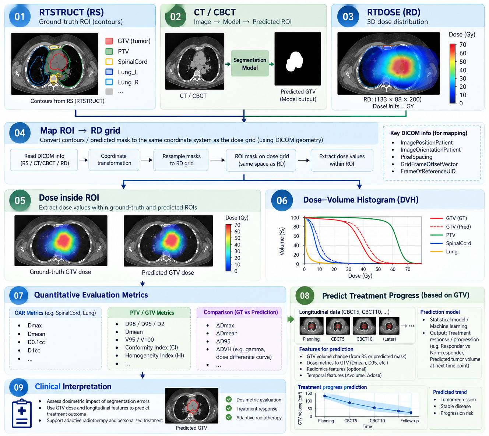

Research framework · Radiotherapy imaging
CT/CBCT Segmentation & Dosimetric Evaluation
A proposed image-to-dose research framework linking CT/CBCT segmentation, radiotherapy DICOM objects, dose–volume histograms and longitudinal tumor monitoring.

Research objective
Study how segmentation predictions and reference contours can be mapped to a radiotherapy dose grid, evaluated dosimetrically, and used to investigate tumor-volume changes across treatment fractions.
Data and DICOM components
RTSTRUCT (RS): reference GTV/PTV/OAR contours. CT/CBCT: images and predicted regions of interest. RTDOSE (RD): three-dimensional dose distribution. Spatial alignment requires DICOM geometry and reference-frame checks.
Proposed workflow
(1) Read CT/CBCT, RS and RD; (2) segment regions of interest; (3) transform and resample contours to the dose grid; (4) extract ROI doses; (5) calculate dose–volume histograms; (6) compare ground-truth and predicted masks; (7) explore longitudinal GTV and treatment-progress indicators.
Candidate evaluation metrics
OAR: Dmax, Dmean, D0.1cc and D1cc. GTV/PTV: D98, D95, D2, Dmean, V95/V100, conformity and homogeneity indices. Comparisons may include dose differences and DVH discrepancies.
Research status and limitations
This figure illustrates a proposed analytical pipeline. The dose maps, DVH curves and longitudinal trend shown are conceptual examples; this page does not claim patient-level validation, clinical accuracy or proven treatment-response prediction.
Research methodology
- Load CT/CBCT image series and RTSTRUCT contour annotations.
- Predict regions of interest and align contours to the RTDOSE coordinate system using DICOM geometry.
- Extract voxelwise dose statistics and compute dose–volume histograms.
- Compare predicted and reference structures using geometric and dosimetric metrics.
- Explore longitudinal GTV monitoring as a possible input for treatment-response research.
Validation status
The displayed workflow is a conceptual research design. Illustrative DVH and longitudinal trends should not be interpreted as validated patient results or treatment recommendations.